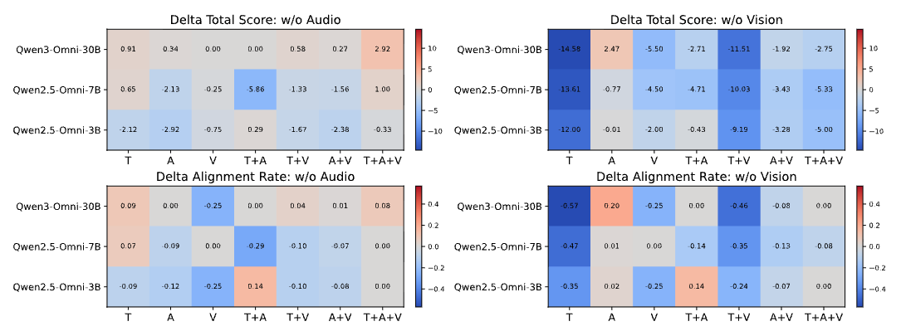

Social-media videos often communicate meanings that go far beyond their visible actions, captions, or speech. A mundane clip can become humorous, ironic, or satirical only through the interaction of multimodal cues and cultural context — making such content a difficult test case for video-language models.
We introduce DrivelHub+, a benchmark of 1,000 short-form videos, each paired with a human-written explanation of its implicit narrative. We evaluate current Video LLMs from two complementary perspectives: explanation, where models must articulate the pragmatic meaning in natural language, and representation, where we adapt reasoning-as-retrieval to test whether model embeddings align videos with their implicit narratives. Our benchmark exposes a persistent gap between multimodal perception and pragmatic comprehension: models can often describe what is shown, yet still fail to infer what is meant.
What is Multimodal Drivelology?
Drivelology describes content that appears trivial, absurd, or nonsensical on the surface but is intentionally structured to convey an implicit humor, satire, stance, or social observation. In video, the cue that makes an apparently meaningless clip meaningful may live in speech, on-screen text, visual action, editing, audio, cultural reference — or their interaction.
Figure 1. A drivelological video: at the surface level, a sheet of paper is simply divided into four parts. The implicit meaning, however, depends on mapping visual transformations of calligraphy paper art to historically associated punishments (Sima Qian's castration, Shang Yang's dismemberment, Li Si's bisection, Louis XVI's decapitation) through wordplay and cultural knowledge.
1,000
Videos
Short-form clips curated from Instagram, Threads, Facebook, YouTube, and TikTok.
100%
Human-Annotated
Every video paired with a human-written implicit-narrative explanation — no LLM-generated annotations.
2
Evaluation Axes
Explanation (open-ended generation) and Representation (bidirectional retrieval).
Two Evaluation Perspectives
📝 Explanation
Models are prompted to explain the implicit meaning of each video in natural language. We evaluate with a structured Video LLM-as-a-judge protocol that scores whether the response captures the main implicit point, identifies the rhetorical mechanism, preserves the social/affective implication, and grounds the interpretation in multimodal evidence — while penalising hallucinations, literal-only, and vague responses.
🔍 Representation (Reasoning-as-Retrieval)
We adapt reasoning-as-retrieval to bidirectional video-text retrieval:
Video → Text: retrieve the correct implicit narrative for a video.
Text → Video: retrieve the matching video for a written narrative.
This probes whether videos and their implicit interpretations are aligned in representation space, beyond surface lexical or visual overlap.
The DrivelHub+ Dataset
Each instance consists of a video, a human-written implicit-meaning explanation, and structured metadata indicating which modalities support the interpretation. DrivelHub+ is released on Hugging Face under a gated research-use license.
Modality Distribution
Required Modality
Count
Text only (T)
109
Audio only (A)
643
Vision only (V)
4
T + A
7
T + V
48
A + V
177
T + A + V
12
Language Distribution (top)
Speech Language
Count
English
750
None (no speech)
149
Mandarin
78
Other / mixed
23
The dataset is predominantly English by design and is intended for research on implicit multimodal meaning, not as a balanced multilingual benchmark. Sensitive-content metadata is included for transparency and responsible use.
Key Findings
🧠 Explanation: Thinking helps — but only when grounded
Qwen3.5-27B (thinking) achieves the strongest generation results (Total 9.52 / 12), but the comparison between thinking and non-thinking variants shows that test-time reasoning is not uniformly beneficial. Effective reasoning must preserve the specific visual or textual transition that carries the implicit meaning — verbose traces without decisive evidence often miss the punchline.
👁️ Modality Ablations: Vision dominates
Removing vision → large drops
Removing the video stream causes much larger degradation than removing audio, especially for textual or visual evidence groups. The video stream supports not only actions and facial expressions, but also OCR-like access to on-screen captions, subtitles, and overlaid text.
Audio → selective
Audio removal has weaker and more heterogeneous effects; for some models and groups, scores even improve, suggesting audio is used selectively and can sometimes introduce distracting cues.
Embedding-native omni-modal models (notably LCO-Omni) substantially outperform generative Video LLMs adapted for retrieval in both directions. LCO-Omni-7B reaches R@1 = 75.8 in text-to-video and LCO-Omni-3B-2605 reaches R@1 = 68.3 in video-to-text — far above the best adapted generative models.
The two retrieval directions are asymmetric: per-query rankings of LCO-Omni-7B and LCO-Omni-3B-2605 diverge dramatically (one retrieves at rank 1 where the other ranks at 744+), showing that text-to-video and video-to-text probe distinct capabilities. We therefore report both rather than averaging.

Figure 2. Input-stream ablation effects grouped by interpretive-evidence label. Removing vision causes much larger drops than removing audio, highlighting the central role of visual frames (and on-screen text) in drivelological interpretation.
Illustrative Examples
On-screen Wordplay
Surface: Two cats interact against a fiery cityscape. Implicit: A pun — not "kidnapping" (the crime), but "kid napping" (a child sleeping). Requires only on-screen text.
Historical + Pragmatic
Surface: A press-conference remark about "surprise." Implicit: Sarcastic weaponisation of Pearl-Harbor history to justify military secrecy. Requires speech + historical knowledge.
Visual Framing Pun
Surface: An artist painting a portrait of a smiling man. Implicit: The artist switches the canvas from portrait to landscape orientation, humorously implying the subject is too wide for a vertical frame.
Text × Vision Interaction
Surface: A man dances confidently after leaving the toilet. Implicit: He plays on the double meaning of "girls asking him out" — he was actually asked to leave the women's restroom.
Resources
💻 Code
Evaluation scripts, prompts, and retrieval harness.
@inproceedings{wang2026drivelhubplus,
title = {Reading Between the Frames: Interpreting Implicit and
Non-literal Meaning in Social Media Videos},
author = {Wang, Yang and Ma, Yanan and Liu, Yiqi and Chang, Zi Yan
and Chen, Chi-Li and Hsiao, Chia-Yi and Loakman, Tyler
and Villavicencio, Aline and Xiao, Chenghao and Lin, Chenghua},
booktitle = {Proceedings of the 2026 Conference on Empirical Methods
in Natural Language Processing (EMNLP 2026)},
year = {2026}
}